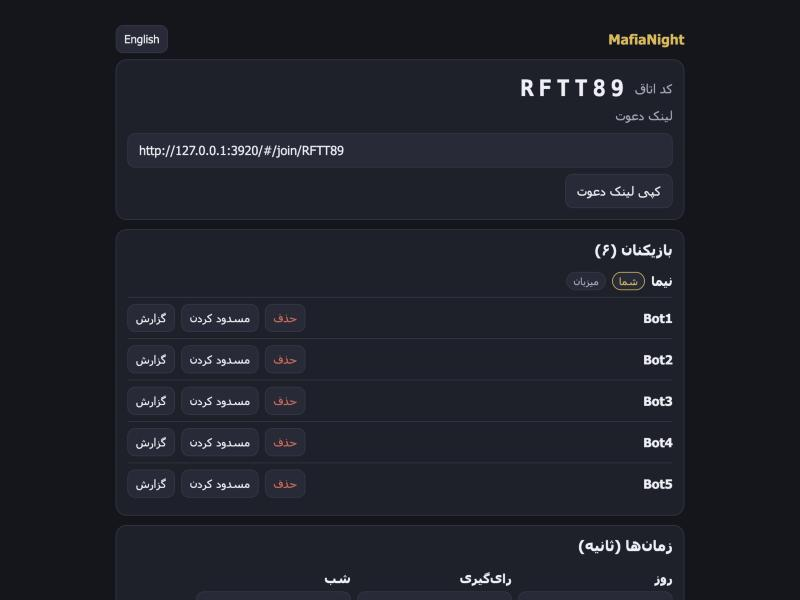
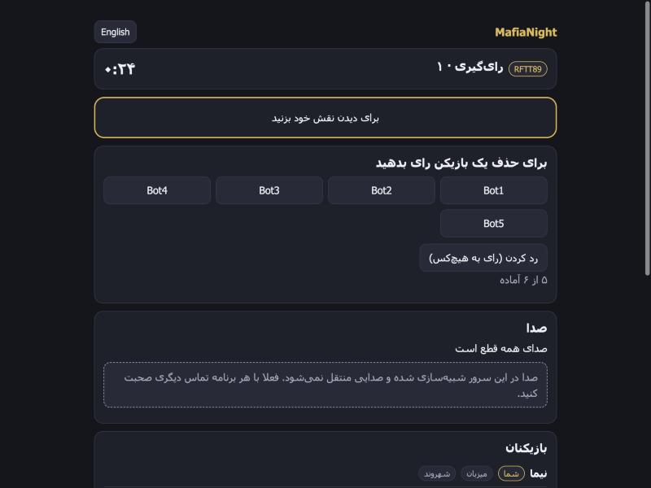
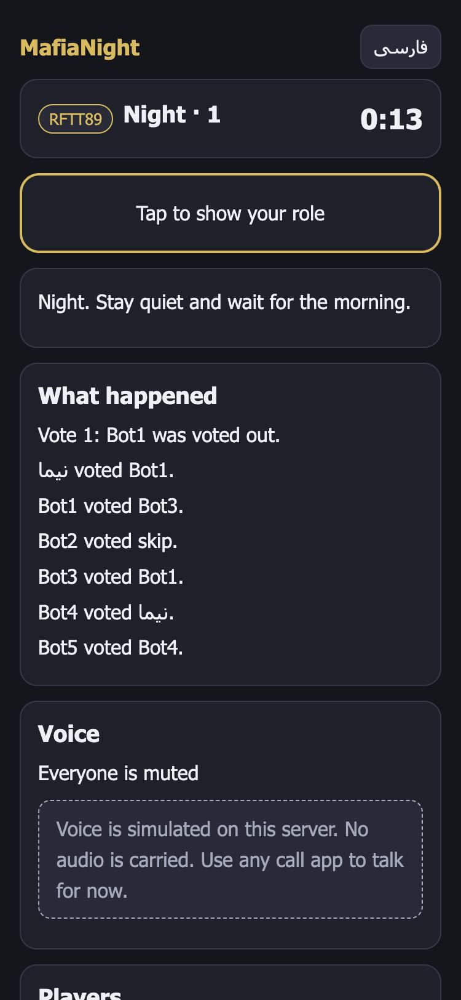
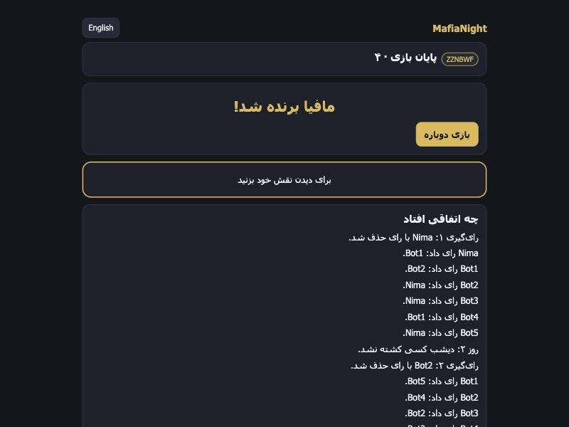

How a game goes
- Make a room. Pick a nickname and share the link with friends. Six to twelve players.
- Get a role. The server deals roles in secret: Citizen, Doctor, Detective, Mafia and Godfather. Your browser only ever gets what you're allowed to see.
- Night. The Mafia chat in private and choose a victim. The Doctor saves someone. The Detective checks someone.
- Day. Everyone talks, then votes. The player with the most votes is out, and a tie means nobody goes.
- Win. Citizens win when the Mafia are gone. The Mafia win when they match everyone else.
What it looks like
Real screens from the running prototype, played with bots filling the other seats.




What's in it
- Farsi (right to left) and English, phone first
- Private Mafia chat at night, public chat by day
- Reconnects after a dropped connection, and games survive a server restart
- Report, block and host kick
- Keeps very little: no phone numbers or real names, no recordings, and games and chat are deleted 24 hours after a game ends
- No dependencies. It runs on plain Node.
Voice is not real yet. There's a voice interface and a fake that shows whose turn it is to speak, but no audio is carried. For now, talk on any call app and use the in-game chat.
Quick install
You need Node 24 or newer. There's nothing else to install.
git clone https://github.com/abozaralizadeh/MafiaNight.git mafianight
cd mafianight
npm startOpen http://127.0.0.1:3000 and create a room. A game needs six players, so to try it alone, add bots to your room:
npm run bots -- ROOMCODE 5Run the tests with npm test. To put it on a Linux server, run sudo ./setup_service.sh. It sets up the service, optional HTTPS, a daily backup and a health check. Run it again any time to update.
This page can't run the game itself. The game needs its server, because the server holds every secret role and runs the timers. So there's no static demo here, only screenshots.
Contributing and license
The code is meant to be free and open. The license is still to be decided. Once the repository is public, issues and pull requests are welcome. The README has the short list of rules for contributing.